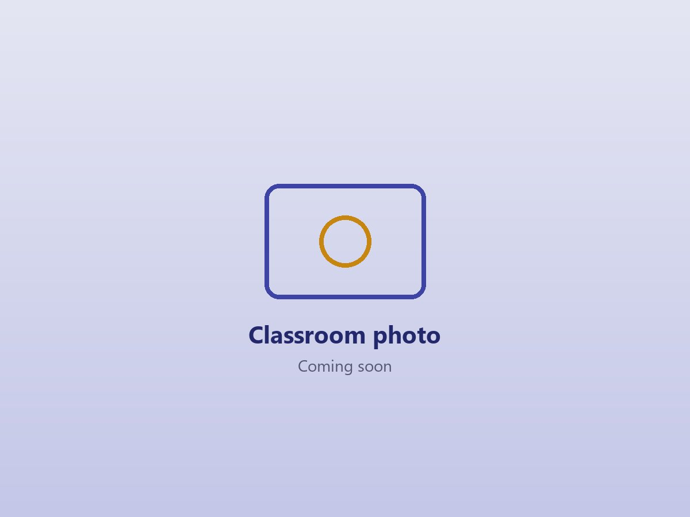

What I Focus On
During my placements I paid particular attention to how teachers manage the classroom, ask questions, and support learners with different abilities and learning needs.
Classroom Management
Clear rules, routines and a calm response to incidents, so every learner feels safe and respected.
Purposeful Questioning
Asking quick questions during and after lessons to check understanding before moving on.
Differentiated Learning
Planning for both fast and slow learners, with focused one-on-one help where it is needed.
Inclusive Teaching
Using simple language, the learners' own languages and everyday examples so no learner is left behind.
My Teaching Portfolio
A collection of key areas where I gained experience and developed my teaching skills.
About Me
My philosophy, values and journey into the teaching profession.
Internship & Practicum
Two placements: School One, Town and School Two, Town.
Teaching Portfolio
My lessons, teaching materials and the strategies I'm building into my practice.
Reflections & Growth
What my reflective journals have taught me, and what I'm still working to improve.

Every child, a fair chance
I believe teaching goes beyond explaining lessons; it is about understanding the learners behind them. I hope to become a teacher who uses differentiated learning to meet individual needs, gives every child a fair chance, and creates a classroom where no learner feels left behind.
Learn More